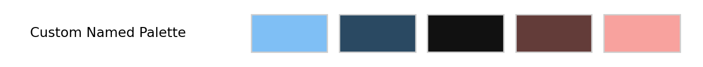
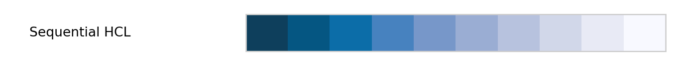
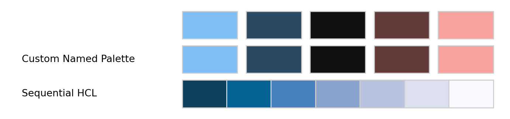
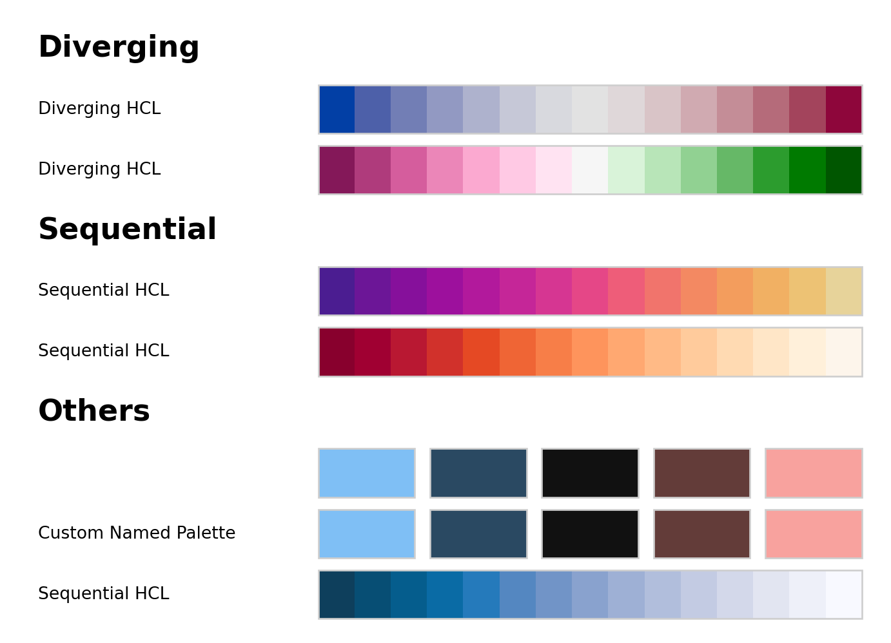

from colorspace import swatchplot, palette
from colorspace import sequential_hcl, diverging_hcl, heat_hcl
# List of hex colors
swatchplot(['#7FBFF5', '#2A4962', '#111111', '#633C39', '#F8A29E'],
figsize = (7, 0.5));Palette Swatch Plot
Description
Visualization of color palettes in columns of color swatches. The first argument pals is very flexible and can be:
- List of hex colors,
- a single object which inherits from
colorspace.palettes.palette,colorspace.palettes.hclpalette,colorspace.colorlib.colorobject, - a list of objects listed above (all of the same type or mixed),
- a dictionary with lists of objects as above. If a dictionary is used the keys of the dictionary are used as ‘subtitles’ to group sets of palettes,
- an object of class
colorspace.palettes.hclpalettes, - or an object of class
matplotlib.colors.LinearSegmentedColormap.
Requires the matplotlib to be installed.
Usage
swatchplot(pals, show_names=True, nrow=20, n=5,
cvd=None, **kwargs)Arguments
-
pals - The color palettes or color objects to be visualized. See description for details and examples to demonstrate different usages.
-
show_namesbool - Should palette names be shown (if available), defaults to True.
-
nrowint -
Maximum number of rows of swatches, defaults to
20. -
nint -
Number of colors to be drawn from palette objects, defaults to
5. -
cvdNone or list -
Allows to display one or multiple palettes and how they look with emulated color vision deficiencies. If
None, this is not applied. Can be set to a list of characters. Allowed:"protan","tritan","deutan","desaturate"corresponding to the functions protan, tritan, deutan, desaturate. -
**kwargs -
forwarded to
matplotlib.pyplot.subplot, can be used to control e.g.,figsize.
Examples
# Create a custom 'palette' (named):
pal = palette(['#7FBFF5', '#2A4962', '#111111', '#633C39', '#F8A29E'],
"Custom Named Palette")
swatchplot(pal, figsize = (7, 0.5));
# A HCL palette. 'n' defines the number of colors.
swatchplot(sequential_hcl("PuBu"), n = 10,
figsize = (7, 0.5));
# Combine all three
swatchplot([['#7FBFF5', '#2A4962', '#111111', '#633C39', '#F8A29E'],
pal, sequential_hcl("PuBu")], n = 7,
figsize = (7, 1.5));
# A color object (e.g., RGB, HCL, CIELUV, ...)
from colorspace.colorlib import hexcols
cobject = hexcols(heat_hcl()(5))
cobject.to("HCL")
print(cobject)polarLUV color object (5 colors)
H C L
1: 359.96 100.56 50.04
22.73 95.68 60.00
44.77 91.06 69.91
67.39 82.91 79.91
90.40 29.80 90.06swatchplot(cobject, figsize = (7, 0.5));# Using dictionaries to add subtitles
# to 'group' different palettes.
swatchplot({"Diverging": [diverging_hcl(), diverging_hcl("Red-Green")],
"Sequential": [sequential_hcl("ag_Sunset"), sequential_hcl("OrRd")],
"Others": [['#7FBFF5', '#2A4962', '#111111', '#633C39', '#F8A29E'],
pal, sequential_hcl("PuBu")]}, n = 15);
Raises
-
TypeError: Ifnrowornno int. -
TypeError: Ifshow_namesnot bool. -
ValueError: Ifnrowornare not positive. -
ImportError: Ifmatplotlib.pyplotcannot be imported, maybematplotlibnot installed?